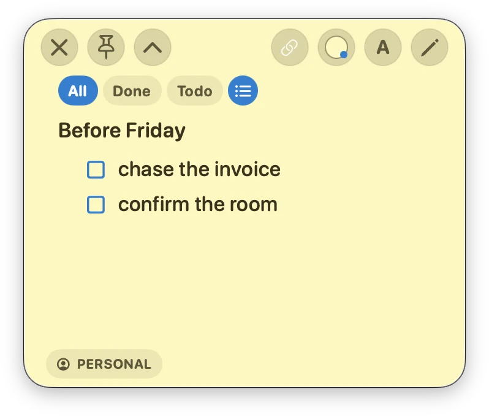

macOS application · Design & development
Noty.
Notes that stay attached to the windows you’re working in.

Window attachment
- Tracking
- Core Graphics supplies window identity, bounds, and visibility. An attached note keeps its offset from the target as the window moves.
- Focus & Spaces
- AppKit manages the note’s position and ordering separately from keyboard focus. Desktop changes and Mission Control have their own presentation rules.
- Recovery
- A failed window lookup is distinct from a closed window. Hiding, minimizing, reopening, and changing the target each have explicit validation paths.
Native interface, local data
Built in Swift, with SwiftUI for the note interface and AppKit for window behavior. Notes, tags, and attachment state are stored in SQLite on the Mac. Backup and restore validates the database and keeps the replaced copy in a recovery folder.